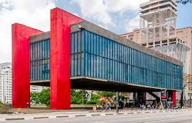

Museu de Arte de São Paulo Assis Chateaubriand
Oque e esse evento:
O Museu de Arte de São Paulo é um museu privado sem fins lucrativos, fundado em 1947 pelo empresário e mecenas Assis Chateaubriand (1892-1968), tornando-se o primeiro museu moderno no país. Chateaubriand convidou o crítico e marchand italiano Pietro Maria Bardi (1900-1999) para dirigir o MASP, e Lina Bo Bardi (1914-1992) para desenvolver o projeto arquitetônico e expográfico. Mais importante acervo de arte europeia do Hemisfério Sul, hoje a coleção do MASP reúne mais de 11 mil obras, incluindo pinturas, esculturas, objetos, fotografias, vídeos e vestuário de diversos períodos, abrangendo a produção europeia, africana, asiática e das Américas.
Hora de funcionamento
- quarta-feira 13:00–19:00
- quinta-feira 13:00–19:00
- sexta-feira 13:00–19:00
- sábado 10:00–18:00
- domingo 10:00–18:00
- segunda-feira Fechado
- terça-feira 10:00–18:00
compatilhar